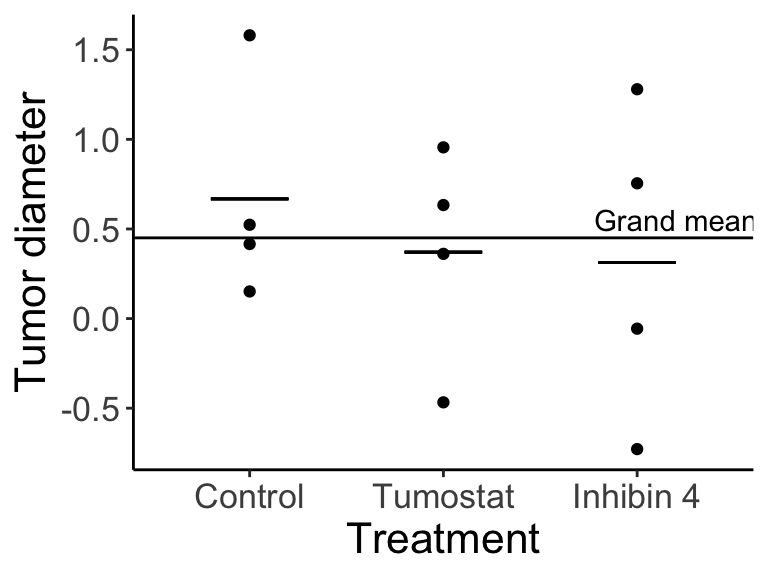
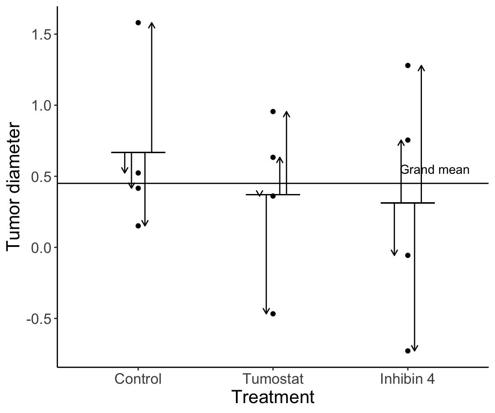
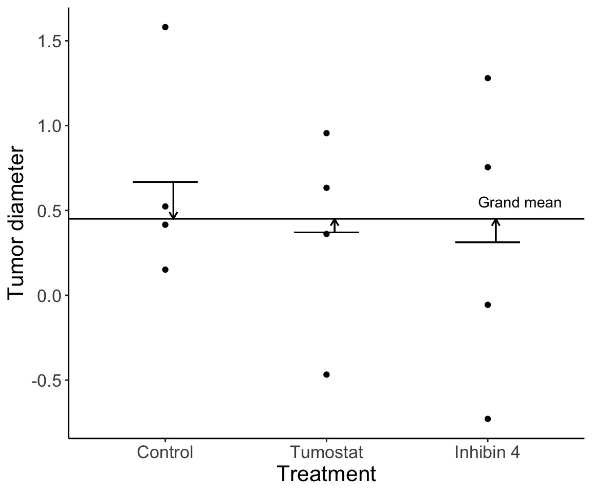
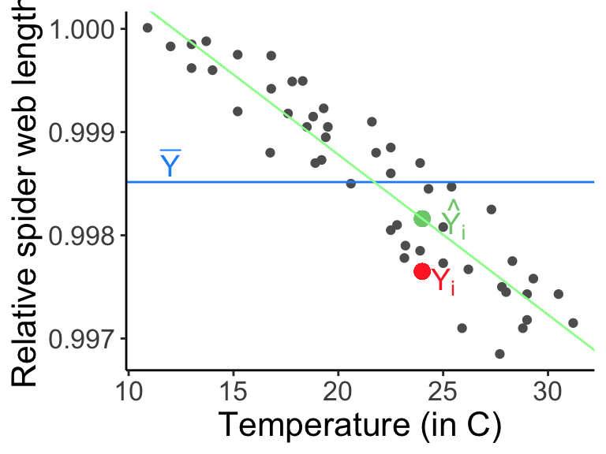

20 Week 11 Lecture
20.1 Week 11 Readings
For this week, I suggest reading Aho Sections 10.1-10.7, as well as Logan Chapter 10.
20.2 Week 11 outline
Basic idea behind ANOVA
Single-factor ANOVA
Fixed effects (Model I ANOVA) vs. Random effects (Model II ANOVA)
Follow up analyses to ANOVA
The model structure of ANOVA is identical to a linear regression of categorical covariate(s). Specifically, ANOVA involves statistics used to estimate group/treatment effects.
\[ Y_{ij} = \mu + A_i + \epsilon_{ij} \text{, where } \epsilon_{ij} \sim \mathrm{N}(0, \sigma^2) \]
The value of each data point, \(Y_{ij}\) is modeled as a function of: 1) the overall mean \(\mu\), 2) the modification of the mean due to membership in group \(i\), \(A_i\), and 3) the unexplained variability remaining after the group-level effect is \(\epsilon_{ij}\). Variation among groups is represented by \(A_i\) and variation within groups is represented by \(\epsilon_{ij}\). The statistical question is whether or not “group” has a statistically significant effect on the overall mean \(\mu\). This is identical to the linear models we have already talked about, except that now we are focusing on models in which the predictor variables are categorical factors (or groups).
What is the null hypothesis here?
Under the null hypothesis, this linear model can be written
\[ Y_{ij}=\mu+\epsilon_{ij} \]
So the null hypothesis being tested is \(H_{0}\): The differences among groups is no larger than would be expected based on the differences within groups. Therefore, there are no significant differences among the groups.
So, do the groups all come from the same population? Based on what we know already know, we might try using pairwise t-tests. But wait! If we use pairwise t-tests to determine which groups were different, we would have \(a(a - 1) / 2\) pairwise comparisons with \(a\) group means.
Question: Why is this ill advised?
Click for Answer
Multiple comparisons will inflate the familywise error rate.
ANOVA is an omnibus test, meaning that if we reject the null hypothesis, we only know that at least one group is different. We do not know which groups in particular are different.
Omnibus tests are very useful to keep familywise error rates down while testing many groups.
So, our null and alternative hypothesis are:
\(H_0\): The groups have the same mean value
\(H_A\): At least one of the groups comes from a population with a different mean
Note that often the null and alternative hypotheses of ANOVA are stated in terms of groups coming from the same or different populations. However, I have carefully worded the null and alternative hypotheses so as to emphasize that ANOVA is a test of means. Because ANOVA assumes that the distributions within each group are Gaussian and have the same variance, if they have the same mean, they must come from the same population (remember: the Gaussian has only two parameters, mean and variance). However, if your data do not exactly meet the assumptions, ANOVA may not flag the groups as coming from different populations if the means are the same. In other words, groups that have the same mean but different variances (a violation of the ANOVA assumptions) may not yield a statistically significant result.
An ANOVA with one categorical predictor with two levels is identical to a two sample t-test.
Before we discuss the mathematics behind ANOVA, we will start with a conceptual example adapted from the McKillup textbook (the chapter is posted in “Additional Readings”).
We are studying the effect of experimental drugs on the growth of brain tumors in humans. We have 12 experimental patients with brain tumors. We assign four to a control group (no drug), we treat four with Tumostat, and four with Inhibin 4. We are measuring (our response variable is) tumor diameter.
We want to know whether there is a difference in the mean tumor diamerer among the drug treatments.
Imagine our results look like this:

How do we test our hypothesis? First let’s relate the figure back to the equation: \(Y_{ij}\) are each of the individual data points (e.g., \(Y_{21}\) is the first individual in treatment 2, Tumostat). The horizonal line is equal to \(\mu\), and \(A_i\) is equal to the difference between \(\mu\) and the treatment means (narrow horizontal lines).
Notice that there is variation at two levels: 1) variation among individuals within a given treatment group, and 2) variation among the three treatment group means. We can partition the variance into these two components.
20.2.1 Variation within treatment group
Variation among individuals within a treatment group is residual variation. This variation exists because of any number of factors we weren’t able to measure.

20.2.2 Variation among treatment group means
Variation among treatment means is variation due to the effect of the treatment (if there is an effect) in addition to the individual variation.

20.2.3 Comparing variance components
We can relate these two components of variation to one another, and this is our test statistic. Informally (we will get into the mathematical formulas soon) we can write this as:
\[ \frac{\text{Among group variance (group effect + error)}}{\text{Within group variance (error)}} \]
Question: Approximately what is this ratio equal to under the null hypothesis for ANOVA?
Click for Answer
Under the null hypothesis, we assume there is no group effect. So, the ratio is about 1.
Let’s imagine our data looked slightly different:

How much variation is there among groups relative to within groups? Without knowing the details yet, do you think there is a significant difference among groups?
20.3 Comparing variance components
Question: Given that we are using null hypothesis significance testing methods, what do you think the next step is after we estimate the test statistic?
Click for Answer
Compare the value of the test statistic to the distribution of the test statistic under the null hypothesis.
Question: The distribution of the test statistic under the null hypothesis describes the ratios of variances. What distribution do you think it is?
Click for Answer
The F distribution (see Week 5 lecture)
Another way we can phrase the statistical question is to ask whether the differences among group means are significantly different from the differences seen within groups. In ANOVA, we compare variances in order to compare means.
20.4 Two ways to estimate variance
- Variation within groups
We can calculate the within-group variance as an average of the within group variances from each group. In other words:
\[ \sigma^2 = \frac{1}{a} (\text{Within-grp var grp }1 +\text{Within-grp var for grp }2+...+\text{Within-grp var group }a) \] This can be re-written as:
\[ \sigma^2 = \frac{1}{a} \sum_{i = 1}^a \text{Within-grp var group }i \] There is actually a second way we can calculate the within-group variance:
- Variation among groups
Under \(H_0\), the data in each group are an independent sample from the same underlying population. We can calculate a mean for each of the \(a\) groups. Here we are assuming that each group has the same number (\(n\)) of data points. (This is called a “balanced design”. More on this in a bit.)
We can use the Central Limit Theorem to estimate the variance. We calculate the variation in means as: \(\sigma^2_{\bar{Y}} = \frac{\sigma^2}{n}\), where \(\sigma^2_{\bar{Y}}\) is our estimated variance of the group means and \(\frac{\sigma^2}{n}\) is our overall uncertainty divided by \(n\) (thus, our ability to estimate \(\mu\) with \(\bar{Y}\) improves with increasing sample size).
We can rearrange this to get a second formula for the within-group variance:
\[ \sigma^2 = n \sigma^2_{\bar{Y}} \]
Under \(H_0\), both ways of calculating variance (among groups using CLT or within groups as an average of group variance) will give equivalent estimates.
\[ \text{Under H}_o \rightarrow n \sigma^2_{\bar{Y}} = \frac{1}{a} \sum_{i = 1}^a \text{Within-group variance in group }i \]
However, if there are true group differences, the variation among groups will be large compared to the variation within groups.
Now we’ll use our example of the tumor diameter data with no true treatment differences and run simulations of the experiment with 100 samples in each treatment in order to estimate and compare variance within groups and variance among groups.
set.seed(3467)
replicates <- 100
var.among <- c()
var.within <- c()
for (i in 1:1000) {
y <- rnorm(replicates * length(treatment.names))
x <- rep(treatment.names, each = replicates)
dat <- data.frame(Treatment = x, TumorDiameter = y)
dat$GroupMeans <- rep(c(mean(dat$TumorDiameter[dat$Treatment == "Control"]), mean(dat$TumorDiameter[dat$Treatment == "Tumostat"]), mean(dat$TumorDiameter[dat$Treatment == "Inhibin 4"])), each = replicates)
dat$Treatment <- factor(dat$Treatment, levels = treatment.names)
var.among[i] <- replicates * var(unique(dat$GroupMeans))
v1 <- var(dat$TumorDiameter[which(dat$Treatment == "Control")])
v2 <- var(dat$TumorDiameter[which(dat$Treatment == "Tumostat")])
v3 <- var(dat$TumorDiameter[which(dat$Treatment == "Inhibin 4")])
var.within[i] <- (1 / 3) * sum(c(v1, v2, v3))
}
mean(var.among)## [1] 0.991662## [1] 0.994850620.5 Single-factor ANOVA
First we will start will the simplest ANOVA type, where we have a single factor (discrete covariate). We will work through an example involving the heights of plants, \(Y\), under three different experimental treatments (\(i\)), low nitrogen (N), ambient N, and high N. We have four replicates in each treatment. We index the heights as \(Y_{ij}\), where \(i\) is treatment \(i = (1, ..., a)\) and \(j\) is the individual plant \(j = (1, ..., n)\). There will be a lot of variation in plant heights for a million reasons we can’t measure. But, we want to partition the variance into 1) the variance due to individual fluctuations (“error”), and 2) the variance due to the treatment (nitrogen level).
This is a single-factor (one-way) ANOVA because we have one grouping category, nitrogen treatment, with three mutually exclusive levels (low N, ambient N, high N).
Our data is as follows:
| Height | Treatment |
|---|---|
| 10 | low N |
| 12 | low N |
| 12 | low N |
| 13 | low N |
| 9 | ambient N |
| 11 | ambient N |
| 11 | ambient N |
| 12 | ambient N |
| 12 | high N |
| 13 | high N |
| 15 | high N |
| 16 | high N |
We first need the group means:
\[ \bar{Y}_{\text{low N}} = \frac{10 + 12 + 12 + 13}{4} = 11.75 \]
\[ \bar{Y}_{\text{ambient N}} = \frac{9 + 11 + 11 + 12}{4} = 10.75 \]
\[ \bar{Y}_{\text{high N}} = \frac{12 + 13 + 15 + 16}{4} = 14.00 \]
The overall mean is \(\bar{Y} = 12.17\).
Both this week and next week, we will be working through different ANOVA tables for each model we review. ANOVAs can be expressed in a table where each row is a category of variation that we are estimating. As we go from the leftmost column to the rightmost column, we estimate the partitioned variation and then conduct our hypothesis test.
I suggest you try to fill out the ANOVA tables in your notes during lecture as we go through them, and practice filling out ANOVA tables on your own as well.
| Source of variation | SS | DOF | MS | F | P |
|---|---|---|---|---|---|
| Among groups | |||||
| Within groups | |||||
| Total |
Then, we will calculate the total amount of variation, or the squared difference between each data point (\(Y_{ij}\)) and the overall mean (\(\bar{Y}\)):
\[ \text{SS}_{\text{total}} = \sum^a_{i = 1} \sum^n_{j = 1} (Y_{ij} - \bar{Y})^2 = 41.67 \]
You can think of a double sum like a nested for loop in R. Note that different sources express the same formula in different ways (I will try to be consistent in lecture, but let me know if you need a clarification on notation).
Next, we will calculate the sum of squares among groups, or how much the mean of group \(i\) (\(\bar{Y}_i\)) differs from the overall mean (\(\bar{Y}\)):
\[ \text{SS}_{\text{among groups}} = \sum^a_{i = 1} \sum^n_{j = 1} (\bar{Y}_{i} - \bar{Y})^2 = 22.17 \]
We sum up \((\bar{Y}_{i} - \bar{Y})^2\) for every data point \(j\) in group \(i\), so in this case we sum up the same number four times for each cell.
Question: Because there are the same number of replicates in each treatment for this case, can you think of another way to express \(\text{SS}_{\text{among groups}}\)?
Click for Answer
\(\text{SS}_{\text{among groups}} = n \sum^a_{i = 1} (\bar{Y}_{i} - \bar{Y})^2\). Note that this only works if there are the same number of observations in each group. Always explicitly using the double sum is applicable to more situations (but a lot of textbooks express the formula in this way).
Last, we will calculate the sum of squares within groups, or how much each data point in group \(i\) (\(Y_{ij}\)) differs from the the mean of group \(i\) (\(\bar{Y}_i\)):
\[ \text{SS}_{\text{within groups}} = \sum^a_{i = 1} \sum^n_{j = 1} (Y_{ij} - \bar{Y}_i)^2 = 19.50 \]
Does this remind you of linear regression?
\[ \text{SS}_{\text{among groups}} = \sum^a_{i = 1} \sum^n_{j = 1} (\bar{Y}_{i} - \bar{Y})^2 ; \quad \text{SSR} = \sum_{i = 1}^n{(\hat{Y}_i - \bar{Y})^2} \\ \text{SS}_{\text{within groups}} = \sum^a_{i = 1} \sum^n_{j = 1} (Y_{ij} - \bar{Y}_i)^2 ; \quad \text{SSE} = \sum_{i = 1}^n{(Y_i - \hat{Y}_i)^2} \]
The estimated \(\hat{Y}_i\) from the regression is comparable to the group means
## Loading required package: tcltk
Now we have the first column to fill in our ANOVA table:
| Source of variation | SS | DOF | MS | F | P |
|---|---|---|---|---|---|
| Among groups | \(\sum^a_{i = 1} \sum^n_{j = 1} (\bar{Y}_{i} - \bar{Y})^2\) | ||||
| Within groups | \(\sum^a_{i = 1} \sum^n_{j = 1} (Y_{ij} - \bar{Y}_i)^2\) | ||||
| Total | \(\sum^a_{i = 1} \sum^n_{j = 1} (Y_{ij} - \bar{Y})^2\) |
Question: How do we calculate degrees of freedom (in general)?
Click for Answer
Subtract the number of quantities estimated from the data from the total number of data points.
Question: How many quantities did we estimate in the ANOVA calculation? First, how many quantities were estimated and how many data points are included in the formula for the total sums of squares?
\[ \text{SS}_{\text{total}} = \sum^a_{i = 1} \sum^n_{j = 1} (Y_{ij} - \bar{Y})^2 \]
Click for Answer
We estimated the overall mean (“uses up” one degree of freedom). We have \(a \times n\) data points. So, for \(\text{SS}_{\text{total}}\) we have \((a \times n) - 1\) degrees of freedom.
Question: Now, how many quantities were estimated and how many data points are included in the formula for the sums of squares among groups?
\[ \text{SS}_{\text{among groups}} = \sum^a_{i = 1} \sum^n_{j = 1} (\bar{Y}_{i} - \bar{Y})^2 \]
Click for Answer
We estimated the overall mean (“uses up” one degree of freedom), and we have \(a\) data points (one for each group mean). For \(\text{SS}_{\text{among groups}}\) we have \(a - 1\) degrees of freedom.
Question: Last, how many quantities were estimated and how many data points are included in the formula for the sums of squares within groups?
\[ \text{SS}_{\text{within groups}} = \sum^a_{i = 1} \sum^n_{j = 1} (Y_{ij} - \bar{Y}_i)^2 \]
Click for Answer
We estimated the group means (“uses up” \(a\) degrees of freedom). We have \(a \times n\) data points. So, for \(\text{SS}_{\text{within groups}}\) we have \((a \times n) - a\) degrees of freedom. Importantly, though, note that if the groups have different numbers of data points, you need to add up the numbers of degrees of freedom within each group. In other words, if you have three groups (a=3) that have different numbers in each group, the degrees of freedom “within groups” is \((n_{1}-1)+(n_{2}-1)+(n_{3}-1)\), which does not simplify to \(a*n\) since the n’s are all different. We will discuss such unbalanced designs in more depth next week.
We have the second column to fill in our ANOVA table:
| Source of variation | SS | DOF | MS | F | P |
|---|---|---|---|---|---|
| Among groups | \(\sum^a_{i = 1} \sum^n_{j = 1} (\bar{Y}_{i} - \bar{Y})^2\) | \(a - 1 = 2\) | |||
| Within groups | \(\sum^a_{i = 1} \sum^n_{j = 1} (Y_{ij} - \bar{Y}_i)^2\) | \((a \times n) - a = 9\) | |||
| Total | \(\sum^a_{i = 1} \sum^n_{j = 1} (Y_{ij} - \bar{Y})^2\) | \((a \times n) - 1 = 11\) |
Mean squares are calculated by dividing the sums of squares by the degrees of freedom for each row of the table. Mean squares are estimates of variance for components of the model.
Relating this idea back to our first example of tumor diameters:
\[ \text{MS}_{\text{among groups}} = \text{Among group variance (group + error)} \]
\[ \text{MS}_{\text{within groups}} = \text{Within group variance (error)} \]
Our estimate of the variance among groups,
\[ \sigma^2 = n \sigma^2_{\bar{Y}} = \text{MS}_{\text{among groups}} \]
Our estimate of the variance within groups,
\[ \sigma^2 = \frac{1}{a} \sum_{i = 1}^a \text{Variance in group }i = \text{MS}_{\text{within groups}} \]
Mean squares within groups is also called the residual mean squares or mean squares error.
Remember that under \(H_0\), both ways of estimating variance (among groups using CLT or within groups as an average of group variance) will give equivalent estimates. However, if there are true group differences, the variation among groups will be large compared to the variation within groups.
Out test statistic, \(F\), is the ratio of these estimates of variance components.
\[ \frac{\text{Among group variance (group + error)}}{\text{Within group variance (error)}} = \frac{\text{MS}_{\text{among groups}}}{\text{MS}_{\text{within groups}}} = F \]
And the third and fourth columns of our ANOVA table can be filled in:
| Source of variation | SS | DOF | MS | F | P |
|---|---|---|---|---|---|
| Among groups | \(\sum^a_{i = 1} \sum^n_{j = 1} (\bar{Y}_{i} - \bar{Y})^2 = 22.17\) | \(a - 1 = 2\) | \(\frac{\text{SS}_{\text{among groups}}}{\text{DOF}_{\text{among groups}}} = 11.08\) | \(\frac{\text{MS}_{\text{among groups}}}{\text{MS}_{\text{within groups}}} = 5.11\) | |
| Within groups | \(\sum^a_{i = 1} \sum^n_{j = 1} (Y_{ij} - \bar{Y}_i)^2 = 19.50\) | \((a \times n) - a = 9\) | \(\frac{\text{SS}_{\text{within groups}}}{\text{DOF}_{\text{within groups}}} = 2.17\) | ||
| Total | \(\sum^a_{i = 1} \sum^n_{j = 1} (Y_{ij} - \bar{Y})^2 = 41.67\) | \(a \times n - 1 = 11\) |
Because doing this in R (especially when we get to multi-way ANOVA next week) can be tricky, I show you here how this can be done in Excel so the underlying logic is clear
Figure 20.1: Example of how Excel can be used to work out the sums-of-squares for one way ANOVA
We now test whether the F ratio (our test statistic) is significant given its distribution under the null hypothesis. The distribution of test statistic \(F\) under the null hypothesis is \(F | H_0 \sim F_{\text{DOF}_{\text{among}}, \text{DOF}_{\text{within}}}\).
x.values <- seq(0, 100, 0.001)
y.values <- df(x = x.values, df1 = 2, df2 = 9)
dat <- data.frame(FStatistic = x.values, Density = y.values)
ggplot(dat, aes(x = FStatistic, y = Density)) + geom_line() +
geom_vline(xintercept = 5.11, col = "dodgerblue3", size = 1.5) +
annotate(geom = "text", col = "dodgerblue3", label = "F*", x = 5.6, y = 0.5, size = 8) +
coord_cartesian(xlim = c(0, 8)) +
labs(y = "Probability", x = "Quantiles of the F dist.") +
theme_classic() + theme(text = element_text(size = text.size))
Note that the F distribution has a different shape when df1 has higher values.
How would you calculate P here?
## [1] 0.03290738## [1] 0.03290039| Source of variation | SS | DOF | MS | F | P |
|---|---|---|---|---|---|
| Among groups | \(\sum^a_{i = 1} \sum^n_{j = 1} (\bar{Y}_{i} - \bar{Y})^2 = 22.17\) | \(a - 1 = 2\) | \(\frac{\text{SS}_{\text{among groups}}}{\text{DOF}_{\text{among groups}}} = 11.08\) | \(\frac{\text{MS}_{\text{among groups}}}{\text{MS}_{\text{within groups}}} = 5.11\) | \(0.033\) |
| Within groups | \(\sum^a_{i = 1} \sum^n_{j = 1} (Y_{ij} - \bar{Y}_i)^2 = 19.50\) | \((a \times n) - a = 9\) | \(\frac{\text{SS}_{\text{within groups}}}{\text{DOF}_{\text{within groups}}} = 2.17\) | ||
| Total | \(\sum^a_{i = 1} \sum^n_{j = 1} (Y_{ij} - \bar{Y})^2 = 41.67\) | \((a \times n) - 1 = 11\) |
How do we report our findings in a manuscripts/thesis/report/etc.?
We found a significant difference among the three nitrogen treatments given a single-factor ANOVA (\(F_{2, 9} = 5.11\), \(P = 0.033\)).
Special note
I strongly prefer to keep all sums explicit, e.g.,
\[ \sum_{i=1}^{a}\sum_{j=1}^{n}(\bar{Y_{i}}-\bar{Y})^{2} \] instead of
\[ n\sum_{i=1}^{a}(\bar{Y_{i}}-\bar{Y})^{2} \] because the former can be used even if the ANOVA design is not balanced. (A balanced design is one in which the sample size in each cell is the same (n).) Many other texts use the latter notation, so do not let this confuse you.
This figure from Logan (2010) does a nice job of summarizing the steps of one-way ANOVA:

Figure 20.2: Source: Logan (2010) Biostatistical Design and Analysis Using R
ANOVA comes with a number of assumptions. We assume that the residuals are:
Normally distributed. The error terms, \(\epsilon_{ij}\), should be normaly distributed within each group. Note that ANOVA is robust to non-normality if you have a balanced design and similar variances.
Independent within and among groups, i.e., each experimental unit is independent of each other experimentl unit.
Variance is equal (or similar) across all treatments.
Question: What are the residuals in an ANOVA model?
Click for Answer
The difference between the data points \(Y_{ij}\) and the group mean \(\mu_i\), \(\epsilon_{ij} = Y_{ij} - \mu_i \sim \mathrm{N} (0, \sigma^2)\).
20.6 Fixed effects vs. random effects
We have so far assumed that factors are fixed effects. Fixed effects represent all the states in the system you would ever be interested in. Our null hypothesis for a fixed effects factor is \(H_0: \text{all treatment effects, } A_i = 0\) (e.g., the three experimental, pre-planned nitrogen treatments as in our plant example). ANOVA models with only fixed effects are sometimes called Model I ANOVAs.
Random effects represent a random sample of some larger population about which you want to make inference. For example, you are studying literacy in a human population, and in your sample you have English, French, Spanish, and Russian speakers. You are not interested in the specific effect of Russian vs. English, you just want to be able to include in your model variability that may come from the fact that different languages are represented. Random effects are also useful to extrapolate your findings to other languages that were not included in your sample. Our null hypothesis for a random effects factor is \(H_0: \mathrm{Var}(\text{All treatment effects, } A_i) = 0\). ANOVA models with only random effects are sometimes called Model II ANOVAs.
Models with both fixed and random effects are called mixed models
\[ Y_{ij} = \mu + A_i + \epsilon_{ij} \]
| Term | Effects | Model | Description | \(H_0\) |
|---|---|---|---|---|
| \(A_i\) | Fixed | I | effect of the \(i\)th group | \(A_i = 0\) |
| \(A_i\) | Random | II | effect of the \(i\)th random group selected from larger population of groups | \(\mathrm{Var}(A_i) = 0\) |
The models and statistics (\(\text{SS, MS, F, } P\)) for single-factor ANOVAs are the same with fixed effects or random effects.
Some researchers, such as Gelman and Hill, argue that all effects are actually random. The distinction is between whether randomness is modeled or not. Randomness that is modeled is what we call a random effect and randomness that is unmodeled is a fixed effect. This distinction is the basis for hierarchical models (often Bayesian). For example, if we model \(A_i \sim \text{Distribution(parameters)}\), the ANOVA model is now hierarchical.
PS: Here’s my first plug for Gelman and Hill’s excellent book: Data analysis using regression and multilevel/hierarchical models. If you plan to use regression or ANOVA in your research, particularly if you plan on fitting mixed/hierarchical models, I highly recommend getting a copy of this book.

Figure 10.5 from Aho: A random effects model, where the random effects factor is soil fertilizer brand and the response variable is wheat yield \(Y_{ij}\). The top panel describes the underlying distribution of the random factor \(\mathrm{N} (0, \sigma_A^2)\). The bottom two panels describe the distribution of the data for two randomly selected fertilizer brands \(Y_{1j} \sim\mathrm{N} (\mu_1, \sigma^2)\) and \(Y_{2j} \sim\mathrm{N} (\mu_2, \sigma^2)\).
Let’s practice a bit on reasoning whether a factor is best modelled as a fixed effect or a random effect.
Survey of student satisfaction at U.S. colleges and universities. (What if the universities all belonged to a category, e.g., Ivy League? Would this change your answer?)
Survey of public health in Massachusetts (post Romney-care) vs. New Hampshire, with five cities sampled in each state. Is state a fixed or random effect? City?
Growth rates of plants as a function of nutrient level (What if this was a study in the field, sampling across a gradient of nutrient levels?)
Again, ANOVA is an omnibus test, so if we get a significant result, we only know that at least one group is different.
What do we do to find out which group(s) is/are different? This brings us to the subject of “post hoc tests”.
20.7 Post-hoc tests
To follow up on a significant ANOVA result, we can conduct post hoc (or a posteriori) tests. These only make sense for fixed effects, because with random effects, the factors belong to the same population, so differences between pairs has no interpretation.
In general, these are similar to pairwise t-tests assuming equal variance while accounting for familywise error rate and using a pooled estimate of standard error. * Remember that we assume equal variance as one of the assumptions of ANOVA*
There are a huge number of post hoc tests: Fishers Least Significant Difference (LSD), Tukey’s Honest Significant Difference (HSD), Dunnett’s test, Bonferroni’s test, Holm’s test, Scheffe’s test (see Day and Quinn 1989 in “Additional readings” for descriptions).
20.7.1 Tukey’s HSD
Tukey’s HSD is one of the most common post hoc tests. It is very similar to an unpaired two-sample t-test assuming equal variances.
With the t-test, we use a null distribution for the difference between two means, \(T | H_0 \sim t_{n_A + n_B - 2}\).
With Tukey’s HSD, we use the null distribution for the range of an arbitrary number of means, or the distribution for the largest pairwise differences to be expected under the null model for a given number of comparisons, \(q^* | H_0 \sim q_{n_{\text{groups}}, \text{DOF}}\).
This is a new distribution called the studentized range distribution. We will simulate draws from the studentized range distribution on Thursday. For now, its fine to think of this like any other univariate distribution. The q distribution has two parameters, the first representing the number of groups being compared and the second representing the degrees of freedom left over after calculating all the group means.
We will get into more details on Tukey’s HSD and the q distribution on Thursday. For now, imagine that you have four groups for your ANOVA and the p-value of the ANOVA is sufficiently low that you reject the null hypothesis. We now want to do an additional (post-hoc) analysis to determine which pairs of groups are actually significantly different.
In our hypothestical example of having four groups in our analysis (a=4), we can rank hypothetical group means A through D from largest value to smallest: \(B > D > A > C\). We then calculate our test statistic as
\[ q^* = \frac{\bar{X}_B - \bar{X}_C}{\sqrt{\text{MS}_{\text{within}} \frac{\frac{1}{n_B} + \frac{1}{n_C}}{2}}} \sim q_{a, \text{DOF_within}} \] where \(MS_{within}\) is the mean squares within groups and is directly analogous to the pooled variance when we were doing two-sample t-tests. (Note that in comparing this equation to the expression for a pooled t test there is a factor of 2 difference; this is absorbed into the definition the q distribution.)
Note that \(n_{B}\) and \(n_{C}\) are the number of data points in each group, and because we are assuming a balanced design, we can simplify this a bit to
\[ q^* = \frac{\bar{X}_B - \bar{X}_C}{\sqrt{\frac{\text{MS}_{\text{within}}}{n}}} \sim q_{a, \text{DOF_within=an-a}} \]
We can re-arrange this to define the Minimum Significant Range (MSR)
\[ \bar{X}_B - \bar{X}_C = MSR = \sqrt{\frac{\text{MS}_{\text{within}}}{n}} q_{(0.05)[a, \text{DOF_within=an-a}]} \] where now \(q_{(0.05)[a, \text{DOF_within=an-a}]}\) is the quantile of the q-distribution.
After comparing the largest mean to the smallest, you compare the second largest mean to the smallest, and so on, until you find nonsignificant differences.